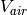
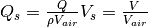
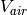
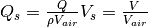

marilib.airplane.propulsion.jet_models module¶
Created on Thu Jan 24 23:22:21 2019
Module author: DRUOT Thierry : original Scilab implementation
Module author: ROCHES Pascal : portage to Python
-
marilib.airplane.propulsion.jet_models.air_flows(rho, v_air, r, d, y)[source]¶ Air flows and speeds at rear end of a cylinder of radius rear_radius mouving at v_air in the direction of its axes y is the elevation upon the surface of the cylinder : 0 < y < inf
-
marilib.airplane.propulsion.jet_models.boundary_layer(re, x_length)[source]¶ Thickness of a turbulent boundary layer which developped turbulently from its starting point
-
marilib.airplane.propulsion.jet_models.corrected_air_flow(Ptot, Ttot, Mach)[source]¶ Computes the corrected air flow per square meter
-
marilib.airplane.propulsion.jet_models.efan_nacelle_design(this_nacelle, Pamb, Tamb, Mach, shaft_power, hub_width)[source]¶ Electrofan nacelle design
-
marilib.airplane.propulsion.jet_models.fan_thrust(nacelle, Pamb, Tamb, Mach, PwShaft)[source]¶ Compute the thrust of a fan of given geometry swallowing free air stream
-
marilib.airplane.propulsion.jet_models.fan_thrust_with_bli(nacelle, Pamb, Tamb, Mach, PwShaft)[source]¶ Compute the thrust of a fan of a given geometry swallowing the boundary layer (BL) of a body of a given geometry The amount of swallowed BL depends on the given shaft power and flying conditions.
-
marilib.airplane.propulsion.jet_models.nacelle_generic_drag(aircraft, nacelle, Re, Mach)[source]¶ WARNING : nacelle drag returned corresponds to the number of engine : nacelle.n_engine
-
marilib.airplane.propulsion.jet_models.rear_nacelle_design(this_nacelle, Pamb, Tamb, Mach, shaft_power, hub_width, body_length, body_width)[source]¶ BLI nacelle design
-
marilib.airplane.propulsion.jet_models.resize_boundary_layer(body_width, hub_width)[source]¶ Compute the relation between d0 and d1:
d0 : boundary layer thickness around a tube of constant diameter
d1 : boundary layer thickness around a the tapered part of the tube
-
marilib.airplane.propulsion.jet_models.specific_air_flows(r, d, y)[source]¶ Specific air flows and speeds at rear end of a cylinder of radius
 mouving at  in the direction of 
its axes,
mouving at  in the direction of 
its axes,  is the elevation upon the surface of the cylinder :
is the elevation upon the surface of the cylinder :WARNING : even if all mass flows are positive, Q0 and Q1 are going backward in fuselage frame, Q2 is going forward in ground frame.